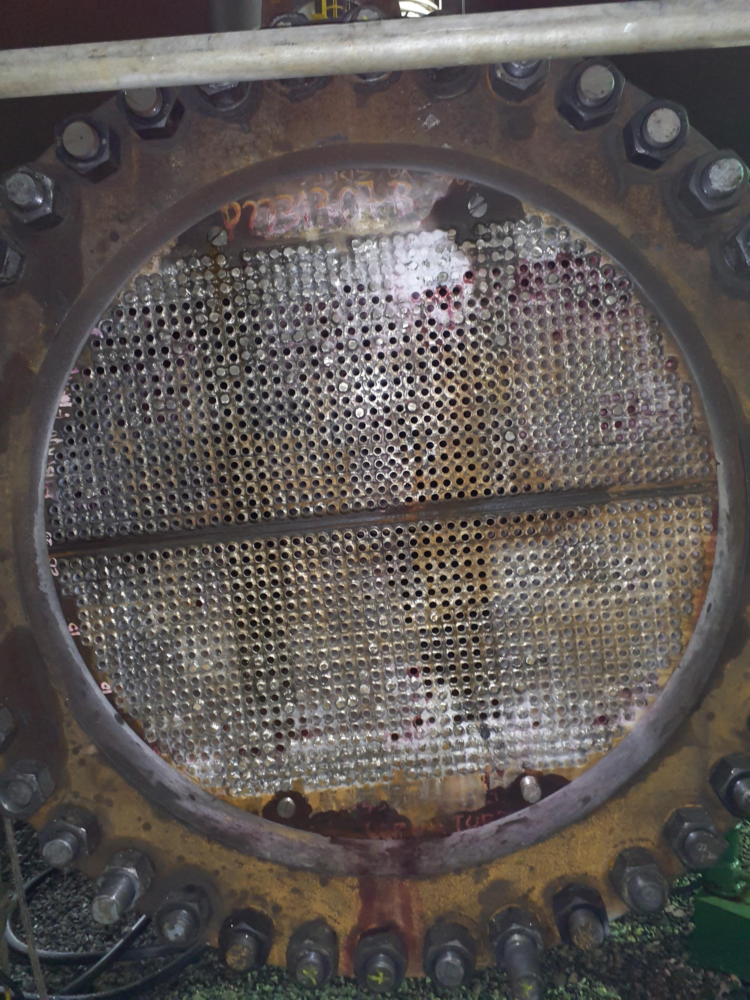
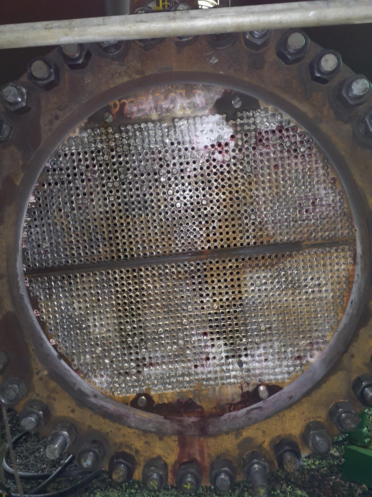

.jpg) 

P-22313-07 B
- Montar acesso, exaustão e iluminação, onde necessário, para inspeção do equipamento.
Realizar inspeção visual (com registro de imagem) das escadas, plataformas e guarda corpos, se tiver.
Preparar a superfície e realizar ensaio de ME, conforme indicado no croqui anexo. Total de 15 pontos.
Realizar inspeção visual externa do equipamento (com registro de imagem), incluindo: saia, berço ou perna (dependendo do tipo de equipamento), olhal de içamento (se tiver), isolamento térmico (se tiver: atentar para CSI) concreto fire proof (se tiver), chumbadores (se tiver) e aterramento elétrico.
Realizar martelamento das conexões soldadas com diâmetro menor ou igual à 2’’.
OBSERVAÇÃO: Os acessórios roscados, plugues e niples roscados NÃO DEVEM ser martelados.
FEIXE:
Abrir e remover o casco com feixe junto (dentro) dele.
Sacar o feixe. Feixe tipo “U”.
OBSERVAÇÃO: Prever a fixação do casco para que o feixe possa ser sacado.
Efetuar inspeção preliminar de todos os componentes do feixe.
Executar hidrojateamento do feixe (utilizar pressão mínima de 12.000 PSI).